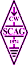

|  |
EUROPÄISCHE CW ASSOZIATION
EuCW Handtastentag
|
 |
EuCW Mittsommer-Handtastentag
(EuCW Midsummer Straight Key Day)
Der EuCW Mittsommer-Handtastentag (SKD) wird ausgerichtet vom EuCW
Gründungsmitglied SCAG, die seit 1990 diese Aktivität der EuCW gewidmet
hat.
Datum: Schwedischer Mittsommertag
Das ist immer der Samstag zwischen 20. und 26. Juni.
Zeit: 0800-2200 UTC
Frequenzen:
80 m: 3540 kHz - 3580 kHz
40 m: 7020 kHz - 7040 kHz
30 m: 10105 kHz - 10125 kHz
20 m: 14050 kHz - 14070 kHz
Regeln:
Der SKD ist kein Kontest im eigentlichen Sinne, daher gibt es auch keine
QSO-Punkte. MINDESTENS 5 QSOs müssen gefahren werden.
Teilnehmer sollen und dürfen "Noten" vergeben für alle CW Handschriften,
und zwar von 1 bis 5, wobei 5 die BESTE Note ist. Wer einen Schnitt von
besser als 3.5 schafft, der bekommt ein Diplom, das "Straight Key Award".
Einsendeschluss: 1. Juli
Mgr: SM0OY, Lars Nordgren, Lindv. 19, S-19270 SOLLENTUNA.
E-Logs: scag (at) scag.se
Englische
Ausschreibung/Ergebnislisten
zur EuCW Startseite
zur ECM Liste (Englisch)